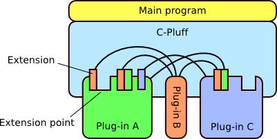

The plug-in architecture supported by C-Pluff is presented in the following figure. There is a thin main program controlling the plug-in framework. The main program is responsible for initializing and setting up the plug-in environment. Most of the application logic is contained in plug-ins which are independent components and can be developed and distributed separately. Plug-ins integrate with each other by providing extension points and extensions. An extension point is a point into which other plug-ins can attach extensions. An extension can be just information, expressed in XML format, or the plug-in may also provide program logic as part of the plug-in runtime library. The framework provides services for accessing extensions and for managing plug-in dependencies.

C-Pluff plug-in architecture
For example, let us assume that we are developing an extensible text editor. One extension point defined by core editor plug-in could be auto-completion extension point. A plug-in providing basic Java source code support could provide an extension for auto-completing Java code. Now, while this extension could do basic auto-completion of plain Java code, it is customary that Java source code also includes embedded documentation, such as JavaDoc comments and tags, or annotations, such as XDoclet tags, as part of doc comments. Instead of trying to support all known tags and their semantics, the plug-in providing basic Java support could define another extension point for additional plug-ins that know how to perform auto-completion of different kind of tags in doc comments. This way the extensibility of the application is not limited to the extension points defined by the core application but the plug-ins can incrementally increase the extensibility of the application.
Generated on Fri Apr 6 15:40:55 2007 for C-Pluff C API by  1.5.1
1.5.1